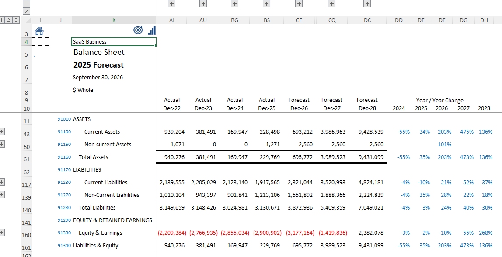
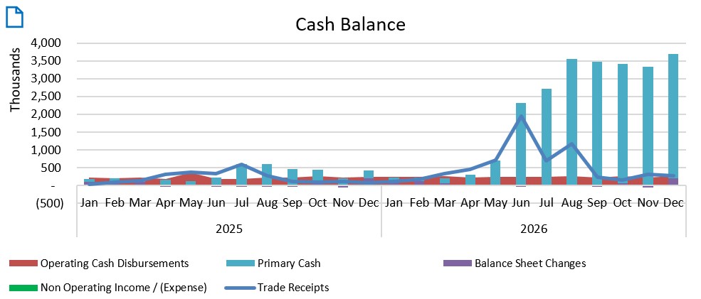

Fully balanced across P&L, Balance Sheet, Cash Flow and Operating Cash Flow — so forecasts update in minutes, not weeks.

A live balance sheet — actuals flow straight into the forecast, balanced by design.

Cash visibility that updates automatically as actuals come in — no separate model to maintain.
In most models, the link between the GL and planning stops at the P&L.
Actuals don't flow cleanly into the forecast — updates require manual fixes and quickly fall out of date.
Balance sheets break. Cash flow becomes a guess. Reconciliation eats hours that should go to strategy.
The structural gap between accounting and forecasting is the real problem — and most tools don't address it.
AI can generate analysis — but when the underlying data is unique for every entity, so are the prompts, and that creates more work.
bot-Planner reports use a universal framework for prompting LLMs on the same output for every entity — Standard Framework = Standard Prompts = Less work.
Predictive AI can correlate and extrapolate, but not without insights into the purpose of the accounts in the mix. Datasets age out quickly and need frequent input (CSV) refresh.
bot-Planner standardizes COA account definitions, providing AI with Account Intelligence to use for correlating activity between and within accounts.
A Fixture in the Department of the CFO
bot-Planner is programmed in Excel — it is a planning and reporting layer that sits between the GL and Universal Results — every account is standardized across every entity — every component of the model is stable.
The bot-Planner model doesn't break because it doesn't change.
Step 1
Upload a Summary Trial Balance from any Accounting or ERP Software
Load a trial balance. Your forecast begins where the actuals end.
Step 2
Update the Forecast
Choose from 13 P&L and 6 Balance Sheet categories to edit predictions in real time and continuously refine forecast accuracy.
Step 3
Excel runs the balanced model
P&L, Balance Sheet, and Cash Flow update together, in the same workbook — no separate reconciliation step.
Step 4
Present Results using Universal Reporting Framework
Access maintenance-free pre-defined graphs, KPIs, and over 50 reports for updating standardized client presentations.
You're already giving strategic advice. bot-Planner removes the model-building bottleneck between you and the next client.
Every client runs on the same reporting framework, so onboarding a new entity doesn't mean building a new model from a blank sheet.
Your judgment stays the differentiator — the mechanical work of keeping three statements in sync no longer has to be.
Monthly close is compliance work. Forecasting is where the real advisory relationship — and the real revenue — lives.
New clients rarely show up with structured financials, and the Chart of Accounts always needs work. bot-Planner circumvents the COA and generates universal financial statements for improved consistency, comparability, and agility — any entity, accounting platform, or COA, no matter how the accounts are arranged.
bot-Planner is priced per client entity — your cost scales with your book of business, not a flat license fee. Hands-on setup and training included, not a self-serve signup.
We can set this up using your actual GL data — so you're looking at your own forecast, not a generic demo.